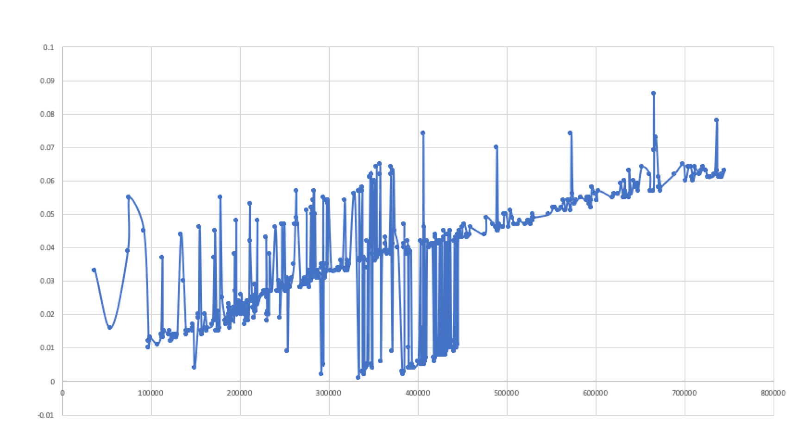

1. 简介
由于影响qps的因素有很多，因此没有一个足够准确的公式来描述如何根据各系统参数计算qps，因此工程实践中，通常是通过压测的方式来获得拥有较高qps的系统配置，然而，即使如此，获取较高qps的思路是什么？
本文将通过对JVM运行方式进行理想化的假设，从而得到线程和内存对qps影响的 定性结论。
2. 哪部分内存区域对qps影响最大
通常在gc调优时，我们关注的的是Heap区。这是因为非Heap区域的值一般是固定的，只需要通过监控获取到峰值，设置时预留一点buffer即可。
Heap区分为年轻代和老年代，年轻代又分为一个eden和两个survivor。程序运行创建的对象通常会先分配到eden区，eden区满后，会触发年轻代垃圾回收，存活的对象会放到survivor区域，多次年轻代gc后，部分长期存活的对象会晋升到老年代。
接下来我们进行如下假设：
-
假设系统已经稳定运行，且每次晋升到老年代的对象较少，老年代gc的频率低，可忽略不计。通常一个健康的应用都可以满足这个假设。
这意味着我们只需要考虑年轻代gc对qps的影响。
-
假设每个线程都能分到足够的cpu时间执行业务逻辑
如何理解这个假设？如果一个线程执行的请求需要访问一次数据库耗时10ms，访问一次redis耗时1ms，本地代码执行耗时0.01ms，则共耗时11.01ms，1秒钟可以执行 \$1000/11.01≈90.83\$次请求。cpu在这一秒内只需提供\$90.83\times0.01≈0.9083\$ms的执行时间，通常情况下，cpu不会满载，因此这个假设是合理的。
-
假设年轻代gc时间与年轻代gc时对象存活数成正比，且年轻代gc时对象存活数与线程数成正比。
这个假设实际上是为了方便计算，实际上年轻代gc时间与对象存活数是正相关的，多次年轻代gc时对象存活平均数与线程数也是成正相关的。
关于多次年轻代gc时对象存活平均数与线程数也是成正相关的，由于作图较为耗时，这里我不再给出。
年轻代gc的主要工作是标记和拷贝存活对象，因此gc时间和存活数正相关与理论基础相容。同样的，线程数目越多，gc roots也就越多，那么同等条件下，gc时候的实时对象存活数就越多。
3. 计算最大qps
设线程数为n，单个线程qps为\$v_(qps)\$，经历一段时间t(t远远大于年轻代周期)后，总的请求数为Q，时间t中的，除gc外的时间为\$t_(run)\$。则有
设年轻代eden区域内存为\$m_(eden)\$，单个线程平均每秒创建对象大小为\$v_(eden)\$，平均每个线程对年轻代gc的影响系数为k，则有
其中\$m_(eden)/(nv_(eden)\$表示一次gc周期中，应用程序运行的时间，nk表示一次gc周期中，年轻代gc stop the world的时间。工程实践中，nk通常比\$m_(eden)/(nv_(eden)\$要小的多，因此\$t_(run)\$总是约等于t的。另外注意到，应用的可用性A为
接下来联立(1)(2),得到
理想情况下，我们认为\$v_(qps),v_(eden),k\$是不变的。
-
当n为定值时，qps随着\$m_(eden)\$增大而增大，且\$m_(eden)\$增长对qps的增益越来越小。同时有
\[\begin{align} \frac{Q}{t}&=\frac{v_{qps}}{\frac{1}{n}+\frac{nkv_{eden}}{m_{eden}}}\\ &\leq \lim \limits_{m_{eden} \to +\infty}\frac{v_{qps}}{\frac{1}{n}+\frac{nkv_{eden}}{m_{eden}}}\\ &=nv_{qps} \end{align}\]当eden取无穷大时，qps取得最大值\$nv_(qps)\$。
-
当\$m_(eden)\$为定值时，由\$a^2+b^2>=2sqrt(ab)\$
\[\begin{align} \frac{Q}{t}&=\frac{v_{qps}}{\frac{1}{n}+\frac{nkv_{eden}}{m_{eden}}}\\ &\leq \frac{v_{qps}}{2\cdot \sqrt{\frac{1}{n}\cdot\frac{nkv_{eden}}{m_{eden}}}}\\ &=\frac{v_{qps}}{2\cdot \sqrt{\frac{kv_{eden}}{m_{eden}}}}\\ \end{align}\]上式在\$1/n=(nkv_(eden))/m_(eden)\$，即\$n=sqrt(m_(eden)/(kv_(eden)))\$时取等号。此时，\$t_(run)=1/2t\$,意味着gc停顿时间和程序运行时间相等，可用性为50%。 在实际系统中，我们希望系统可用性A尽可能高，因此线程不可能取很大的值来换取最大的qps。
上述公式仅是在理想化状态下计算的，在实际的系统中并不成立，通过该公式仅为了可以为 定性分析 提供一些依据，将该公式代入实际系统中不会有很好的效果。